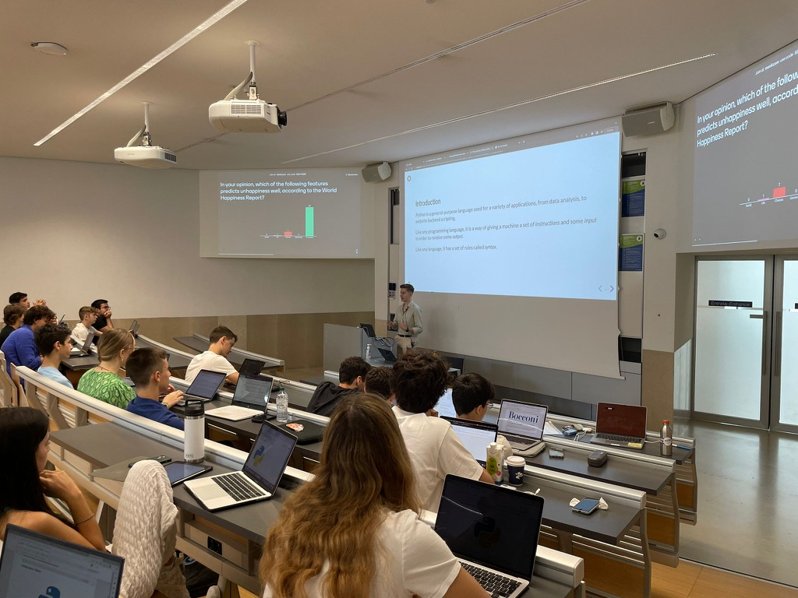
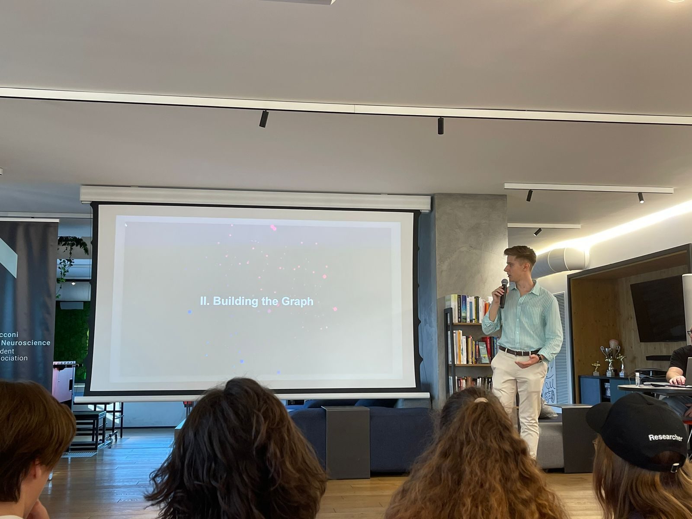
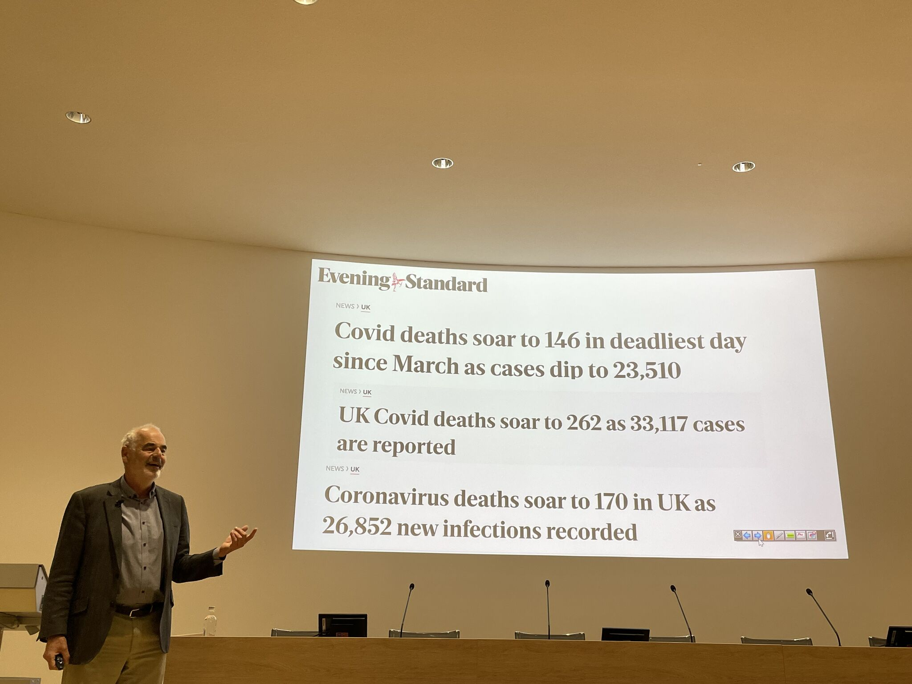
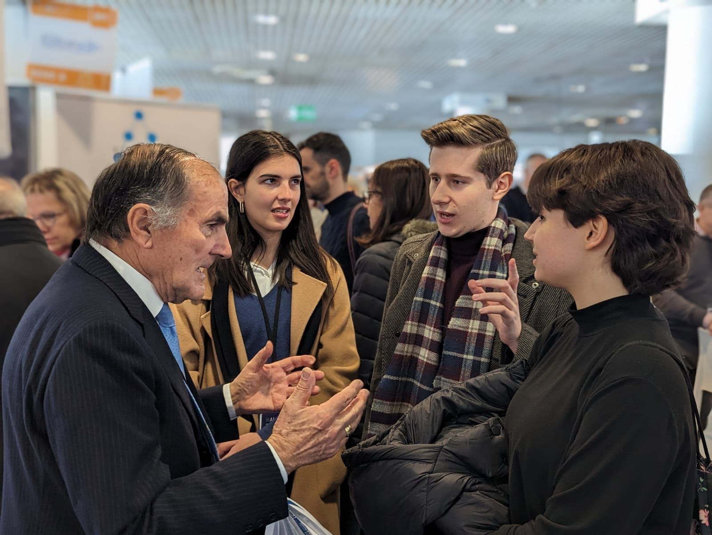

My First Teaching Experience:
Bocconi Summer School 2023
From student to instructor - a challenging and rewarding experience! Back in Milan for the summer, I had the chance to teach prospective students the basics of Data Science.

Research Awards @Bending Spoons
AI research, cool people, and a Bending Spoons aperitivo... These are just some of the highlights of BAINSA's Annual Research Awards!

Can We Trust Statistics & Algorithms?
A talk by prof. David Spiegelhalter OBE
From rather harmless spurious correlations, to potentially dangerous claims about vaccines during the COVID-19 pandemic, telling a story with data requires great responsibility.

AI Takes Over Cannes:
My experience at WAICF 2023
A different kind of festival took place in Cannes. Leading figures in AI such as Yann LeCun, Thomas Wolf, or Aidan Gomez shared their views on the future of this field!